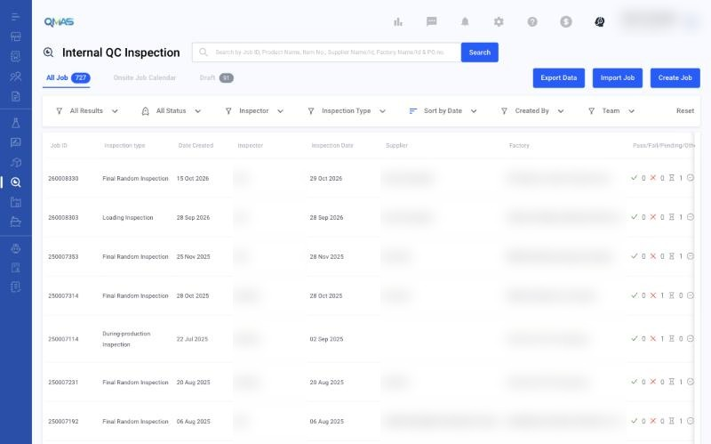
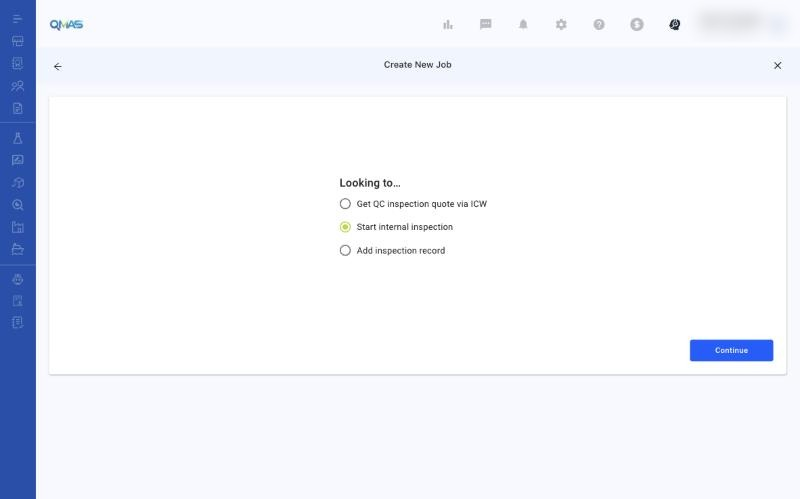
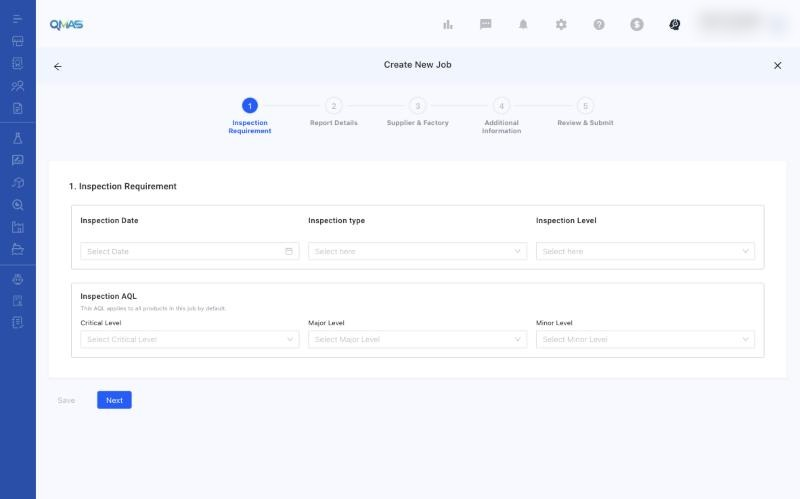

Internal QC Inspection — Start an Internal Inspection
Schedule an inspection that your own QC team carries out, without a third-party provider.
Overview
- Open Internal QC Inspection and click Create Job. Start internal inspection is already selected. Click Continue.
- Inspection Requirement: date, type, level and AQL.
- Report Details, Supplier & Factory and Additional Information work the same way as in the QC Inspection quote flow.
- Review & Submit: check everything and click Submit.
Step-by-step
1. Open Internal QC Inspection
In the left menu, open Internal QC Inspection. The tabs show All Job, Onsite Job Calendar and Draft. Click Create Job. To add many jobs at once, use Import Job.

2. Start internal inspection
Start internal inspection is selected. Click Continue.

3. Inspection Requirement
Choose the Inspection Date, Inspection type, Inspection Level and the AQL (Critical, Major, Minor). There is no budget or service provider, because your own team does the inspection. Click Next.

4. Steps 2–5
The next steps are the same as in the QC Inspection quote flow. See https://marconip2026.github.io/qmas-user-guide/qc-inspection/ for screenshots.
- Report Details: add products and their POs.
- Supplier & Factory: select the supplier and the factory to inspect.
- Additional Information: upload reference files and add remarks.
- Review & Submit: check the summary, then click Submit. The job opens with its Job ID.
Tips
If you need a third-party inspector instead, use QC Inspection → Create Job → Get QC inspection quote via ICW.
Click Save on any step to keep a draft.
FAQ
- How do I start an internal inspection?
- Go to Internal QC Inspection (https://qmas.icw.io/inspection/internal/list), click Create Job, keep Start internal inspection selected, click Continue and complete the 5 steps. Direct link: https://qmas.icw.io/inspection/jobs/new?type=internalInspection
- Can I import internal inspection jobs?
- Yes. Click Import Job on the Internal QC Inspection list.